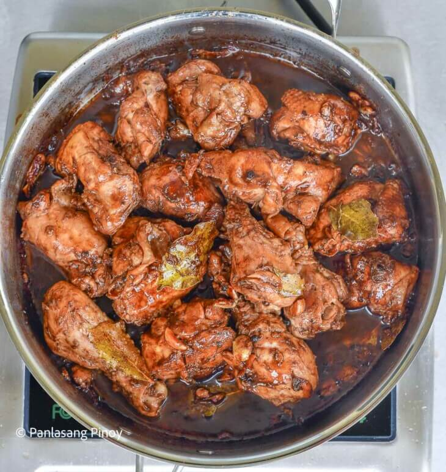

Adobong Manok

Description
Adobong Manok sa Buko is simply Filipino chicken adobo cooked with young coconut juice. It can also be referred to as “Inadobong Manok sa Buko”. It is delicious with a well balanced flavor. I enjoyed having this dish for lunch.
Ingredients
- 1 ½ lbs chicken cut into serving pieces
- 1 piece Knorr Chicken Cube
- 2 cups buko juice
- 1 piece onion, chopped
- 8 cloves garlic, crushed
- ¼ cup green onion, chopped
- 1 teaspoon whole peppercorn
- 4 pieces dried bay leaves
- 3 tablespoons soy sauce
- 5 tablespoons white vinegar
- 3 tablespoons cooking oil
Instructions
- In a bowl, combine chicken, soy sauce, and vinegar. Marinate for at least 30 minutes.
- Heat oil in a pan. Sauté onion and garlic.
- Once onion softens, add marinated chicken. Sauté until light brown.
- Pour remaining marinade, and then add whole peppercorn, dried bay leaves, and buko juice. Let boil.
- Add Knorr Chicken Cube. Stir. Adjust heat to between low to medium and continue to cook for 30 minutes.
- Add green onions. Cook for 3 minutes.
- Transfer to a serving plate. Share and enjoy!